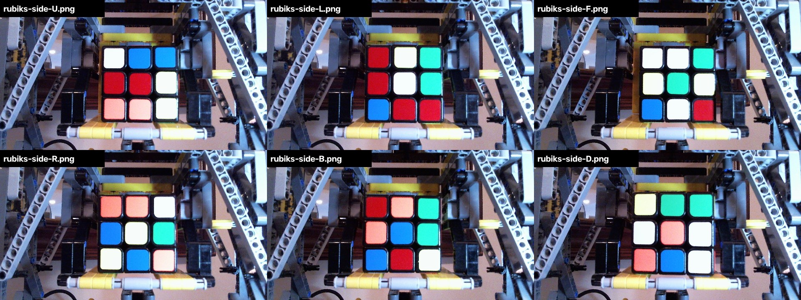

What I tested, how, and why
I want a Rubik's Cube app where the camera watches the cube, works out the solution, checks every move the user makes, and, if they make a mistake, says so and gives a corrected plan. Phase 1 runs on a laptop with its webcam; once that works, Phase 2 moves it to our XREAL glasses with the Eye camera.
How I tested
- Fake but realistic camera images. I wrote a program that draws a 3D Rubik's Cube in any scrambled state, with messy backgrounds, bad lighting, glare, fingers in the way, blur and camera noise. Because the program drew the cube, it knows the correct answer for every image, so every test is scored automatically and fairly. See the test images →
- Two difficulty levels: "normal light" (a decent room) and "hard lighting" (coloured light, glare, more fingers, blur).
- A few real photos: 6 photos of a real cube from another developer's project (dwalton76) as a reality check.
- Every project ran its own code. One project is written in C#, which couldn't run on my machine, so I translated its logic to Python step by step to test it.
The 6 tests
1Solver: how many moves to solve the cube?
2Finding the cube: can it find the stickers when someone holds it?
3Colours: does it read every sticker correctly?
4Camera view: how much of the cube must the camera see?
5Move tracking: does it catch the user's mistakes?
6The C# project and our hardware
Hardware: our XREAL One Pro glasses have the XREAL Eye camera add-on, so in Phase 2 the app will see exactly what the wearer sees, and the Beam Pro (the Android unit the glasses plug into) will run it.
The conclusion
No existing project does the whole job. We'll combine the best piece from each test:
| Part | What we use |
|---|---|
| Solving | kociemba |
| Finding the cube | My trained AI model (YOLO) |
| Colours | Our method + the backup method |
| Checking moves | My own move tracker |
Be upfront about
- Most images were computer-made, so real results will be somewhat lower. The AI model must be retrained on a few hundred real photos of our cubes; that's the next big step.
- Licences: two of the tools (kociemba and YOLO) have licences (GPL and AGPL) that need a decision before we ever sell the app.
- Rollout: Phase 1 runs on a laptop with its webcam. Phase 2, once Phase 1 works, moves it to our XREAL glasses with the Eye camera.
The real photos I used
From dwalton76's rubiks-cube-tracker test data: one real cube, photographed side by side by his Lego robot.

Only 6 photos, all straight-on with no hands, which is why the computer-made images carry most of the testing.